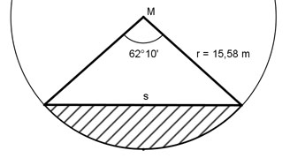

Aufgabe 32 Wie groß ist das schraffierte Kreissegment A?

10 10’ = ----° = 0,17° 60 62°10’ = 62,17° r2 * π * α° AKreisausschnitt = ------------- = 360° 15,582 m2 * π * 62,17° = ------------------------ = 132,7 m2 360° s/2 sin α/2 = ----- | *r r s/2 = sin 62,17°/2 * r |*2 s = 2 * 15,58 m * 0,5163 = 16,1 m h cos 62,17°/2° = --- |*r r h = cos 67,17/2° * r = 0,8564 * 15,58 m = 13,3 m s * h 16,1 m * 13,3 m ADreieck = ------- = ----------------- = 107,1 m2 2 2 AKreissegment = AKreisausschnitt – ADreieck = = 132,7 m2 - 107,1 m2 = 25,6 m2